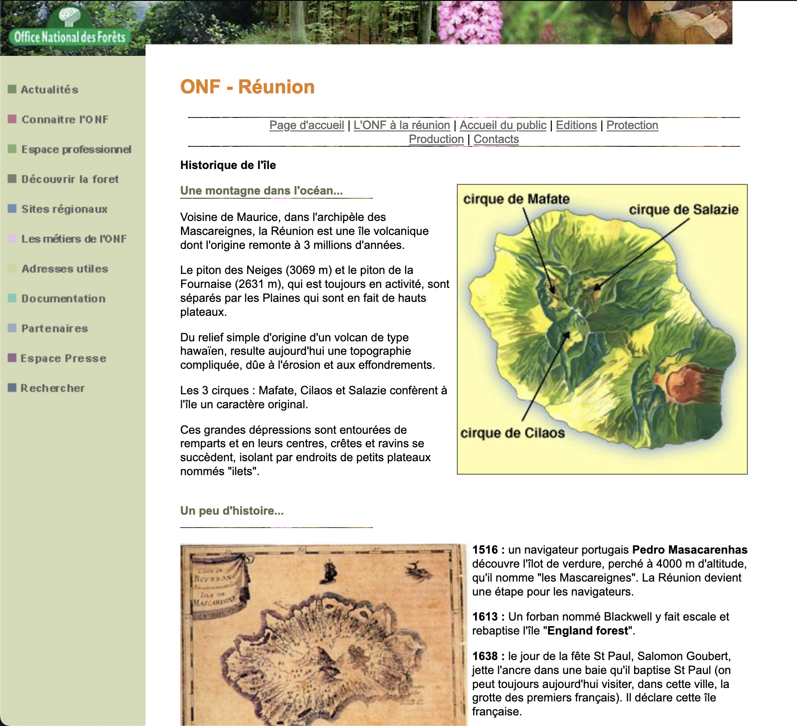

Après l'AFNIC en décembre et l'INSEE en janvier, et les collectivités locales à l'automne, je me demandais bien quel site administratif je pourrais bien vous présenter pour ne pas changer de thème. Je pourrais par exemple vous faire part de la reprise de deux images [1] [2] de mon site par l'Office National des Forêts. Le site régional de la Réunion (aujourd'hui disparu) est par ailleurs très bien fait et je suis fier que mes images soient mises en valeur parmi la présentation des forêts de tamarins et autres essences réunionnaises. Pour les randonneurs, on y trouvait aussi la liste des sentiers de randonnée fermés au public.

Mais pour vous présenter un site administratif plus concéquant, je préfère
vous orienter vers le site de l'équipement. Comme tout département la Réunion dispose d'une DDE et cette dernière a fort à faire sur l'île
puisque les habitants y sont nombreux, le terrain accidenté, d'autant que
les cyclone et le volcan font parfois de gros dégats sur les ouvrages
existants. L'ouvrage le plus impressionant à la Réunion est sans
conteste la route du littoral ( ou route en corniche ) construite dans
les années 60 entre Saint-Denis et Le Port. C'est le tronçon de la
RN 1 le plus emprunté. Au delà de Saint-Paul, la nationale est plus
étroite provoquant de légendaires embouteillages jusqu'à la Saline et à
Saint-Leu. La route des tamarins en construction aujourd'hui devrait
prolonger cette 4 voies jusqu'à Etang Salé. Cette route importante
comprenant de nombreux ouvrages d'art, sera la plus chère de la Réunion et
devrait être inaugurée en 2006.
Mais la DDE ne s'occupe pas uniquement de la construction des nouvelles
routes, elle doit aussi assurer l'entretien et la gestion des routes
existantes, des ports et aéroports, du transport de l'eau et de
l'urbanisme avec les collectivités locales. La gestion des routes passe
aussi par une meilleure information des automobilistes et c'est pour ça
que l'on peut voir sur leur site, les images de 4 webcams pointant sur la
route du littoral; montrant régulièrement les embouteillages (page maintenant hors ligne).
Les seules voies que la DDE n'a pas a charge sont les chemins vicinaux
confiées aux communes et les chemins de grande randonnée à la charge de l'ONF dont je viens de présenter le site. La grande boucle est bouclée.